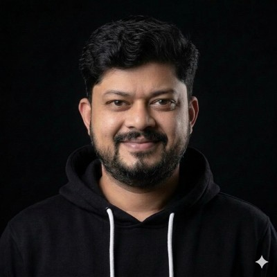

Multi-cloud FinOps framework
Designed and ran a governance framework across AWS and Huawei Cloud for STC / Intigral. It introduced cost visibility metrics that helped optimise multi-million dollar infrastructure budgets.
Role: architect, 2024–2026
Cloud Solution Architect
Cloud platforms that stay up and cost less.
I’m a Cloud Solution Architect in Dubai with 18+ years across telecom, e-commerce and media. I was a Senior Technical Account Manager at AWS, advising C-level teams on architecture, resilience and cost, and I’ve led migration, DevOps and FinOps work across AWS and Huawei Cloud.

I’m a Cloud Solution Architect based in Dubai, with 18 years of experience across telecom, e-commerce and media. I began in 2008 as a systems engineer and freelancer, setting up servers, deploying applications and troubleshooting for clients. That hands-on start still shapes how I work: I want to understand how a platform behaves in production, not just how it looks on a diagram.
Over the following years I moved through cloud and DevOps roles at QBurst Technologies, UST Global and Citruss TV, then joined Intigral in Dubai in 2016. In six years there I led infrastructure, automation and DevOps work for media platforms: moving workloads toward cloud, improving CI/CD, and strengthening disaster recovery and reliability.
In 2022 I joined Amazon Web Services in London as a Senior Technical Account Manager for a strategic enterprise customer. The role was part architect, part trusted advisor. I ran more than 20 Well-Architected reviews and modernisation workshops, worked with engineering teams and C-level leaders, and led a cost optimisation programme that identified $6M in annual savings through rightsizing and architecture re-engineering. I also coordinated AWS specialists and service teams to unblock large-scale initiatives.
I returned to Dubai in 2024 as a Senior Cloud Infrastructure Architect, working as a contract consultant for STC and Intigral until mid-2026. I led architecture for platform modernisation and migration across AWS and Huawei Cloud, and designed a multi-cloud FinOps governance framework that gave teams clear cost visibility across multi-million dollar infrastructure budgets. I also ran architecture reviews and proofs of concept to support technical decisions.
What I care about most is the point where architecture meets the business. A good design should be resilient, secure and affordable enough that the people paying for it can see the value, and I try to make those trade-offs visible to engineers and executives alike. My work leans on Well-Architected thinking, FinOps discipline and plain communication, and I back it with AWS certifications in Solutions Architecture, SysOps and Security, plus the Certified Kubernetes Administrator, FinOps Practitioner and Scrum credentials.
Outside client work, I volunteer with students as an Industry Connect Member for the Computer Science department at BITS Pilani Dubai Campus and as an Industry Expert for the College of Business Information Systems at University of Umm Al Quwain. As part of this volunteering, I deliver case studies on technology topics such as cloud and IT project management, drawing on the kind of problems I work on day to day.
Designed and ran a governance framework across AWS and Huawei Cloud for STC / Intigral. It introduced cost visibility metrics that helped optimise multi-million dollar infrastructure budgets.
Role: architect, 2024–2026
Led a cost optimisation initiative for a strategic AWS enterprise customer. Rightsizing and architecture re-engineering found $6M a year without compromising reliability.
Role: Senior TAM, AWS, 2022–2024
Architecture, migration planning and resilience improvements for cloud platforms at STC / Intigral, backed by proof-of-concept builds to support technical decisions.
Role: Senior Cloud Infrastructure Architect
Led architecture for cloud platform modernisation, migration and resiliency across AWS and Huawei Cloud, and built the multi-cloud FinOps governance framework.

Trusted advisor to C-level stakeholders of a strategic customer. Ran Well-Architected reviews, delivered the $6M savings programme and coordinated AWS specialists to unblock large-scale initiatives.
Led cloud, automation and DevOps transformation for media platforms: CI/CD, migration planning, disaster recovery readiness and reliability.
Earlier roles: DevOps Engineer at Citruss TV (2015–2016), System Analyst at UST Global (2014–2015), System Administrator at QBurst Technologies (2010–2014), and founder of Maguzlabs, a freelance systems engineering practice (2008–2010). B.Tech in Information Technology, University of Calicut.
I support couple of Universities in UAE with delivering sessions on Cloud & Technology case studies to Graduate students in Computer Science and Business Information Systems.
Computer Science Department, BITS Pilani Dubai Campus.
College of Business Information Systems, University of Umm Al Quwain.